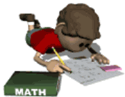
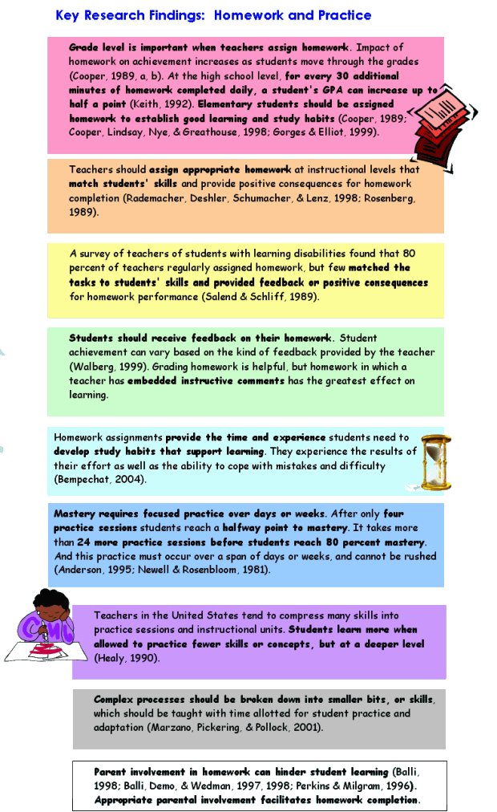
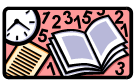

Homework and Practice

You should remember what a KWL chart is from the first activity, cooperative grouping.
Turn to your handouts and find a blank KWL chart for Homework and Practice. Complete the K and W.
Once your K and W is complete, watch the video clip of the class discussion to see how yours compares.
| Reading Assignment for Activity 5. |
*Focus on Effectiveness: Homework and Practice
Homework and practice are related, connected by the context when students are learning on their own and applying new knowledge.
Effective teachers approach this kind of learning experience as any other-matching the planned activity to the learning goal. Research on homework indicates that it should be approached not as an afterthought to the school day, but as a focused strategy for increasing understanding. Knowing which of the type of homework is needed helps teachers design appropriate homework assignments.
Practice means students are engaged in applying new learning, often repeatedly. The goal of practice is for students to get as close to mastery as possible. Research on homework and practice answers important questions:
- When should students time their practice?
- How many skills should students practice at once?
- How can teachers ensure a strong connection between memorization and understanding?
- How much practice is necessary for mastery?
- Effective student practice is key to student achievement.

Implementation
Appropriate homework and well-designed student practice will increase student learning. A few key changes in practice may make a significant difference in student achievement by increasing the positive effects. Research suggests ideas for planning homework and activities to support practice:
Understand the four types of homework. Know when and why to have students practice:
-
Memorization of basic rules, algorithms, or laws so the skill becomes rote.
-
Increase in skill speed, used for improving students' abilities to apply these skills in more complex problem solving.
-
Deepening understanding of a concept-providing students time to read further, elaborating on a new idea and expanding their understanding.
- Preparation for the following day's learning, such as an advance organizer or cue to increase readiness for new information.
Match the right type to the goal. Assign the appropriate homework type to meet the learning goal to make homework a more focused learning experience.
Assign the right level of homework. Homework assignments should be at the instructional level that matches students' skills.
Assign the right amount of homework time. A good rule of thumb is to multiply the grade x 10 to approximate the right amount of minutes per night for students.
Recognize student uniqueness. Students need time to adapt and shape what they are learning as they practice. As they practice, given time, they will incorporate the new skill into a knowledge base of their own, deepening understanding.
Provide clear homework policies. Create and communicate a homework policy at the school level. Policies developed in individual classrooms may communicate a mixed message to parents, and create confusion and frustration. Include expectations, consequences, guidelines, and helpful tips in school homework policies.
Ask parents to facilitate homework completion, not teach content. Communicate ways that families can support homework. Parents should provide a consistent time and place in the home for children to complete homework. Help parents understand that they are not expected to be content experts. If a student needs help with content, that's a sign that the homework assignment may be too difficult.
Homework should serve a clear purpose. Make the goal of a homework assignment explicit and clear to everyone, including students.
Provide appropriate feedback. Effective feedback corrects misunderstanding, validates process, and highlights errors in thinking.
Provide timely feedback. Student learning improves with timely feedback. It's best to provide constructive feedback within hours or a day after students complete an assignment.
Create support structures for homework. Journals, trackers, and other tools help students organize assignments and support communication between student, teacher, and parents.
� 2005 - Focus on Effectiveness is a product of the Northwest Regional Educational Laboratory. These materials are in the public domain and may be reproduced without permission. The following acknowledgment is requested on materials which are reproduced: Developed by the Northwest Regional Educational Laboratory, Portland, Oregon.
Now that you have completed your reading, watch the video of the class discussion to make sure that you have a thorough understanding and comprehension of Focus on Effectiveness: Homework and Practice.
As you are watching the video, you may want to fill out the Homework and Practice handout in your notebook
Watch the video clip to make sure your answers are thorough
Content Focus: Homework and Practice
- This section of preparation integrates three research-based instructional strategies: two are considered heavily pedagogical, summarizing and using the KWL as an advance organizer, while the other, homework and practice, become the content for using and learning the other two strategies.
- An advance organizer does what the name indicates; it allows students to organize information in advance of actually encountering the material under study. You will learn more about these when you complete the module, Cues and Questions.
- In this case, the advance organizer is known as KWL, which organizes information already K(known) to the learners, information the learner W(ants) to know prior to accessing the material under study, and also allows the learner to organize information the learner L(earns) from the material under study.
- Thus, the KWL offers every learner an opportunity to organize Information prior to encountering the material under study and during or after encountering study material. This gives the learner before, during, and after, a connection to the material under study.
- In addition, learners are offered an opportunity to record what they are curious about, to ask questions they predict could be answered once the material under study is accessed. This allows students to verify their own thinking at higher levels of inquiry.
Now that you know all about the skill of working with homework and practice as a strategy, go back to your KWL chart and complete the L portion.
Complete your Activity 5 Summary Page and add it to your Frameworks Notebook along with the KWL Chart and the Homework and Practice Page.